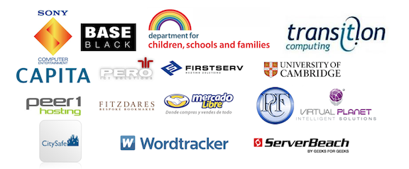

Some of our clients
And what they say about us
I used Atalanta Systems consultants while developing a large education portal for the UK government. They provided expert advice and a practical approach to the ongoing implementation of a scalable Drupal website. Their agile approach helped us to adapt our architecture requirements to cope with predictable levels of change while helping us remain flexible enough for dealing with extreme traffic spikes.
On top of pure technical skills, the team provided skills with agile methodologies, Kanban in particular, which collaborated well with a development team using Scrum. As an honest, dedicated and personable team,I will not hesitate to use Atalanta Systems again for projects requiring expert, agile infrastructure consulting.
Branden Faulls, Development Manager, Capita National Strategies
Atalanta Systems helped us revolutionise our systems infrastructure, introducing cutting edge tools and agile practices into our ops team. As a result we were able to scale back our infrastructure spend and focus our attention on developing software. We now have a stable, solid and reliable environment which can be managed by our developers, and we have been able to shrink the ops team to one full time engineer. We would recommend Atalanta Systems for any infrastructure project, and would be confident that the end result would be a well-designed, easy to manage environment, and a technical team better able to concentrate on core business.
Mike Mindel, Owner and CTO, Wordtracker
We have worked with Atalanta Systems for nearly 3 years and have found their principal consultant, Stephen, to be highly intelligent, focused and hard working. Projects have included virtualising our front end, Java-based proposal system, ensuring the system has maximum redundancy. The system processes high volumes and so it is crucial the system is always running. The current set-up ensures this is the case. Recently Atalanta Systems have been involved with our back end accounting system running on a Solaris/SPARC platform. These are areas of which we have little knowledge and so Atalanta have been great in setting this critical system up and ensuring it continues to run efficiently. Stephen has been crucial to PCF in setting up and overseeing these systems as without his knowledge we would likely have plumped for an inferior Windowsbased system and so are grateful for the in-depth technical knowledge his company provides.
Andrew Barber, Programme Manager, eQuote and ICS, Private and Commercial Finance
We have had the very good fortune to work with Atalanta Systems on a number of highly technical migrations, a number of which took place under the most difficult circumstances. What continuously comes across as the most overriding impression is their "can do" attitude. However, what is particularly rewarding has been the fact that this attitude is backed up by a fantastic delivery track record. Coupled to their impressive technical credentials is a thorough understanding of key business drivers allied to true customer facing skills that allow us the opportunity to engage them directly with our customers without concern.
We continue to engage with Atalanta Systems - indeed, often as a first port of call - to make use of their vast reservoir of technical knowledge and to ensure that we "get the job done". Their flexibility and willingness to assist coupled with their extensive knowledge has often been the critical factor in our successful projects.